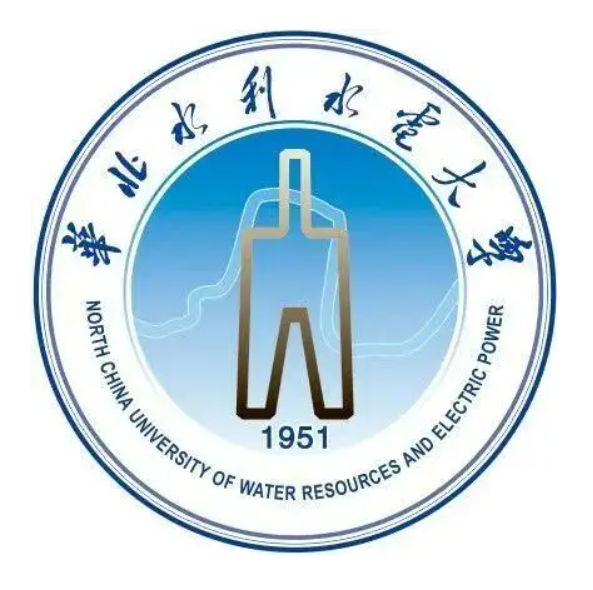

Undergraduate |
Familiar with Java and C language, understand python
Familiar with SQL Server, MySQL and other database operations, understand Oracle database operations
Proficient in the use of various office software and some advanced data processing and analysis import and export
My research interests mainly include: real-time object detection, Android application development, etc
|  | B.S.North China University of Water Resources and Electric Power (2019.9 ~ 2023.7)
|
North China University of Water Resources and Electric Power Entrepreneurial projects
Creator Hive Various resources docking inside and outside the
school and the implementation of later plans: the project team is the first in sales, the campus has established its own second-hand tram sales line, the monthly turnover is about 50,000 yuan, Jingdong, Unicom and other companies campus docking newcomer activity marketing planning and implementation, including other small projects follow-up and planning and implementation promotion
The Student Council
serves as the Executive Chairman of the College and is responsible for promoting the various tasks and activities of the College
Metaverse Computer Vision Object Detection Management Software
Cui Mengjie, Gao Fei, Cao Yuheng, Zhang Jiahao, Liu Zhenming
Certificate number: Soft Writing No. 9540135
"Blue Arrow" APP - be the person in charge of your unique umbrella (personal safety protection APP).
Head of video processing system
based on Yolov5 detection
Person in charge of online classroom public opinion detection system
based on multi-layer neural network
The adoption rate of school press releases, project declarations, etc. is 80%, without the need for school leaders to revise them at length
Photography and video editing: Master basic photography, poster design, retouching, video production and post-editing skills, and be able to complete the corresponding work efficiently
Good communication skills, can timely through some details or behavior of the other party in the dialogue to make different responses, giving people the most comfortable communication experience
Strong sense of responsibility, strong ability to work independently, team spirit